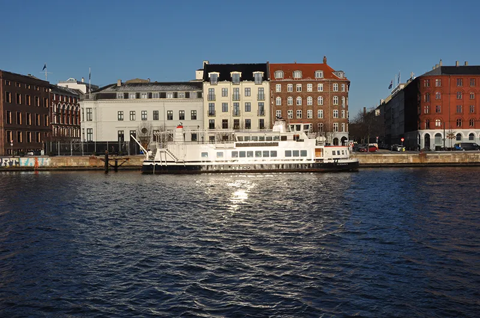

Manilla
Position: CEO
12345678
email@example.com
Position: CEO
12345678
email@example.com
Position: CPO
12345678
email@example.com
Position: CFO
12345678
email@example.com
Her er tre employee cards præsenteret. ::before bruges til at indsætte telefon & email-ikoner.
Koden:
.tel::before {
content: "📞 ";
margin-right: 0.5rem;
}
.email::before {
content: "✉️ ";
margin-right: 0.5rem;
}
Hover-effekten på billedet er lavet med transition og filter.
Her kan koden ses:
img {
transition: filter 0.6s;
&:hover {
filter: brightness(120%);
}
}
Både ::before og ::after bruges sammen med position efter <h2> til at lave den mørkere kant i top og bund af kortet.
Koden
h2::before {
content: "";
position: absolute;
left: 0;
top: 0;
width: 100%;
height: 20px;
background-color: var(--card-edge-color);
}
h2::after {
content: "";
position: absolute;
left: 0;
bottom: 0;
width: 100%;
height: 20px;
background-color: var(--card-edge-color);
}

A building in Berlin

A canal in Copenhagen
Two boats on Møn
I dette eksempel bruges ::before til at lave et overlay over billedet, der er gråt og gennemsigtigt. Det er dog også usynligt indtil man kører musen henover et billede.
Eksemplet bruger også ::after til at lave et circle plus ovenpå billedet. Tegnet sættes i midten af billedet med position.
Her er CSS koden:
.gallery-item::before {
content: "";
position: absolute;
inset: 0;
background: rgb(0 0 0 / 40%);
opacity: 0;
transition: opacity 250ms;
pointer-events: none;
}
.gallery-item::after {
content: "⊕";
position: absolute;
top: 50%;
left: 50%;
transform: translate(-50%, -50%);
color: white;
font-size: 3rem;
opacity: 0;
transition: opacity 250ms;
pointer-events: none;
}
.gallery-item:hover::before,
.gallery-item:hover::after {
opacity: 1;
}